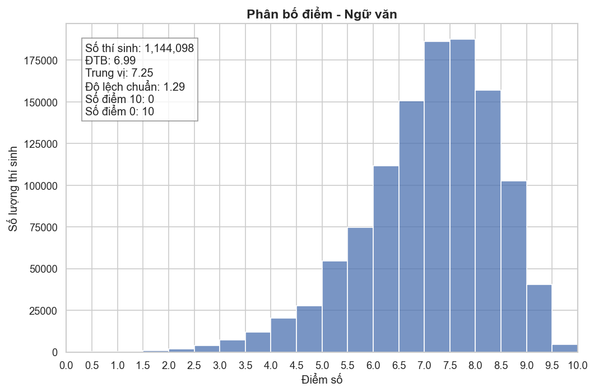
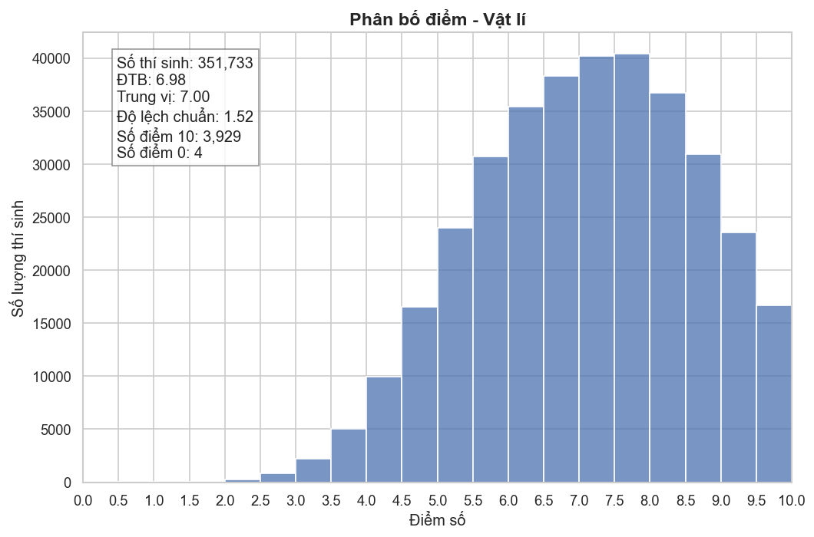
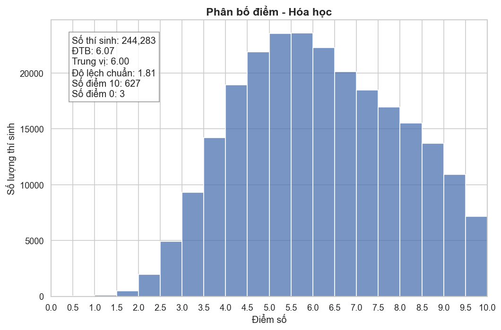
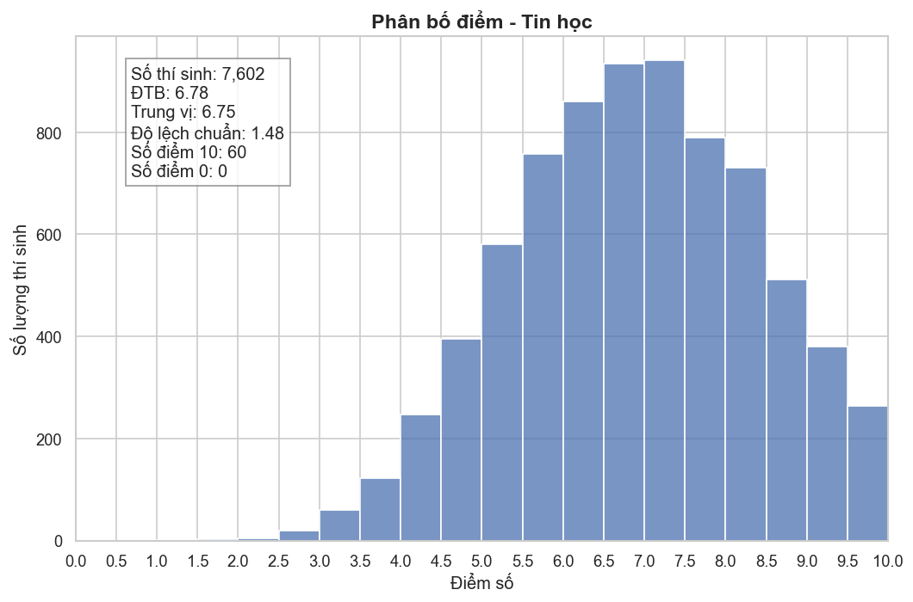
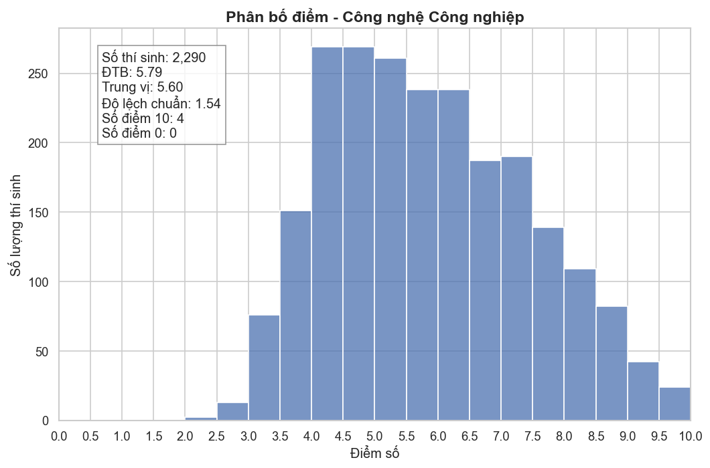
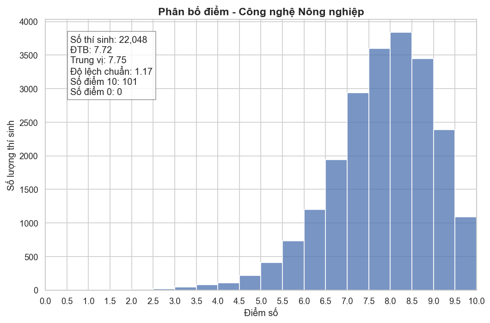
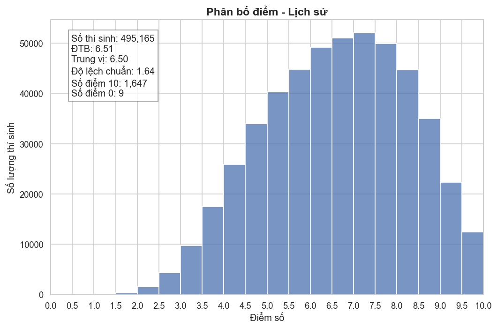
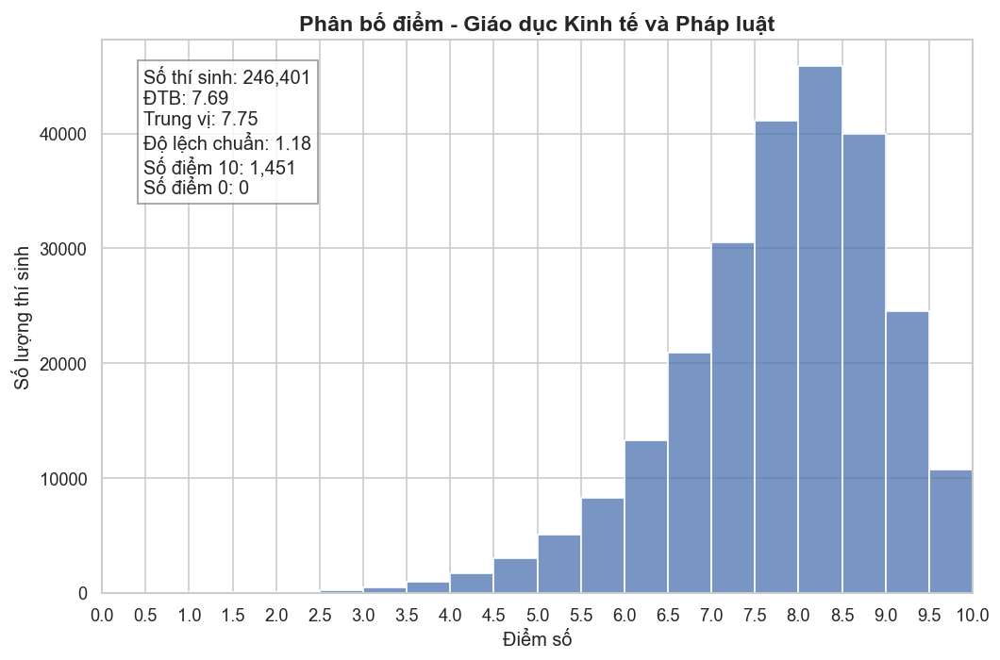
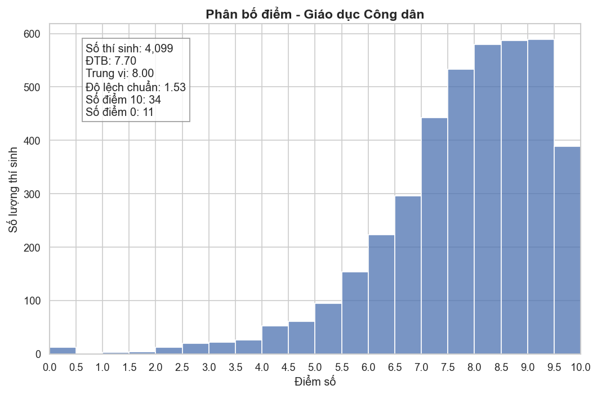

BÁO CÁO PHÂN TÍCH ĐIỂM THI
Dữ liệu tổng hợp từ file .ipynb
🔄 Transform – ETL Pipeline
Chuyển đổi dữ liệu thô từ nhiều file Excel thành định dạng Parquet tối ưu.
-
1
Đọc dữ liệu (Multi-Sheet Scanning) Duyệt tất cả file
.xlsx, đọc từng sheet và gắn metadata nguồn gốc.for file_path in data_dir.glob("*.xlsx"): excel_data = pd.read_excel(file_path, sheet_name=None) for sheet_name, df in excel_data.items(): df['origin_file'] = file_path.name df['origin_sheet'] = str(sheet_name) all_dfs.append(df) -
2
Chuẩn hoá tên cột Xoá dấu, viết thường, thay khoảng trắng bằng dấu gạch dưới.final_df.columns = [ unidecode(col).lower().replace(' ', '_') for col in final_df.columns ] # "Tin học" → "tin_hoc"
-
3
Làm sạch mã số báo danh (SBD) Loại dòng thiếu SBD, chuẩn hoá 8 chữ số.final_df = final_df[final_df['sobaodanh'].notna()] final_df['sobaodanh'] = (final_df['sobaodanh'] .astype(int).astype(str).str.zfill(8)) # 12345 → "00012345"
-
4
Tối ưu kiểu dữ liệu Chuyển điểm sang
float32, giá trị lỗi (ABS…) thànhNaN.for col in score_cols: final_df[col] = pd.to_numeric( final_df[col], errors='coerce' ).astype('float32') -
5
Xuất Parquet Sắp xếp theo SBD, lưu bằng engine PyArrow – nhanh và nén tốt.final_df = final_df.sort_values('sobaodanh') final_df.to_parquet(output_filename, engine='pyarrow', index=False)
📊 Phân tích – Visualization
Đọc dữ liệu Parquet đã chuẩn hoá, vẽ biểu đồ phân phối điểm từng môn và so sánh hai kỳ thi.
-
1
Đọc Parquet Load toàn bộ dữ liệu đã sạch vào DataFrame.df = pd.read_parquet("combined_data.parquet")
-
2
Thống kê mô tả Tính mean, median, std theo từng môn.
Thống kê số lượng thí sinh tham dự, số lượt đạt điểm 10 và điểm 0. -
3
Vẽ biểu đồ phân phối Thể hiện phân phối điểm với khoảng cách mỗi cột là 0.5 điểm.
-
4
Xuất ảnh PNG Lưu từng biểu đồ vào thư mục
charts/để hiển thị bên dưới.
📚 Phân Tích Phân Phối Điểm Số Dưới Góc Độ Đo Lường Giáo Dục
Để đánh giá một biểu đồ phân phối điểm số, chúng ta sử dụng các nền tảng khoa học từ Lý thuyết Đo lường Giáo dục (Educational Measurement) nhằm bóc tách tính hiệu lực và độ tin cậy của đề thi.
1. Lý thuyết Ứng đáp Câu hỏi (Item Response Theory – IRT)
Trong các kỳ thi chuẩn hóa, mô hình 3 tham số (3PL) được áp dụng để đảm bảo đề thi phản ánh đúng năng lực thí sinh:
- Độ khó (Difficulty – b): Hàm thông tin đạt giá trị tối ưu khi giá trị b hội tụ quanh mức 0 (tương đương điểm 5.0). Nếu đa số câu hỏi có b > 0, phổ điểm sẽ bị đẩy về bên trái (lệch trái nhẹ), cho thấy đề thi có độ thách thức cao so với năng lực đại trà.
- Độ phân biệt (Discrimination – a): Hệ số này quyết định khả năng tách biệt giữa các tầng năng lực. Chỉ số a cao dẫn đến Độ lệch chuẩn (SD) rộng, giúp phân loại rõ rệt nhóm thí sinh giỏi và trung bình.
- Yếu tố đoán mò (Guessing – c): Với trắc nghiệm 4 lựa chọn, xác suất may mắn là 25%. Các nhà đo lường thường thiết kế độ khó để điểm trung bình thực tế rơi vào khoảng 4.5 – 5.5 nhằm triệt tiêu nhiễu từ việc khoanh lụi.
2. Quy tắc Phân phối Chuẩn & Độ phân tán
Năng lực của quần thể thí sinh (> 1 triệu người) tuân theo đường cong Gauss. Một đề thi lý tưởng cần thỏa mãn các điều kiện thống kê sau:
- Ngưỡng tin cậy (68-95-99.7): Một kỳ thi có giá trị hiệu lực cao khi khoảng 95% dữ liệu nằm trong phạm vi [Mean − 2SD, Mean + 2SD].
- Tối ưu hóa Độ lệch chuẩn (SD):
- Để phổ điểm bao phủ rộng từ 1 đến 9 điểm, khoảng cách 4 lần SD phải tương đương 7–8 đơn vị điểm.
- Tính toán: 8 / 4 = 2.0 → SD lý tưởng nằm trong khoảng 1.5 – 2.0.
- Nếu SD < 1.5: Phổ điểm bị "nhọn", gây hiện tượng trùng điểm cao, khó xét tuyển đại học.
- Nếu SD > 2.0: Phổ điểm quá "dẹt", cho thấy sai số đo lường lớn hoặc đề thi thiếu tập trung.
3. Phân tích Hiện tượng Lệch phải (Positive Skewness)
Khi biểu đồ có đuôi kéo dài về bên phải và đỉnh dồn về bên trái (điểm thấp), các chuyên gia đánh giá dựa trên các chỉ số:
- Hiệu ứng sàn (Floor Effect): Đỉnh phổ điểm rơi vào dải 2.0 – 3.5 là dấu hiệu đề thi quá khó, vượt quá ngưỡng nhận thức của đại bộ phận thí sinh.
- Tính phân hóa cực đoan: Các câu hỏi vận dụng đóng vai trò là "vách đá", khiến nhóm trung bình khó có cơ hội bứt phá, gây mất động lực học tập.
- Giá trị đo lường: Phổ điểm này chỉ có giá trị trong việc tuyển chọn thiên tài, nhưng thất bại trong việc đánh giá mức độ hoàn thành chương trình giáo dục phổ thông.
Bảng Đối Chiếu Chỉ Số Lý Tưởng
| Chỉ số thống kê | Ngưỡng lý tưởng | Mục tiêu đo lường |
|---|---|---|
| Điểm trung bình (Mean) | 5.0 – 5.5 | Tối ưu hóa hàm thông tin và tính đối xứng của phổ điểm. |
| Độ lệch chuẩn (SD) | 1.6 – 2.0 | Tạo không gian phân hóa đủ rộng cho các tầng năng lực. |
| Hệ số lệch (Skewness) | Tiệm cận 0 | Phản ánh sự tương thích giữa đề thi và năng lực thực tế. |
Môn Toán

💬 Nhận xét – Môn Toán
Môn Ngữ văn
💬 Nhận xét – Môn Ngữ văn
Môn Vật lí
💬 Nhận xét – Môn Vật lí
Môn Hóa học
💬 Nhận xét – Môn Hóa học
Môn Sinh học

💬 Nhận xét – Môn Sinh học
Môn Tin học
💬 Nhận xét – Môn Tin học
Môn Công nghệ Công nghiệp
💬 Nhận xét – Môn Công nghệ Công nghiệp
Môn Công nghệ Nông nghiệp
💬 Nhận xét – Môn Công nghệ Nông nghiệp
Môn Lịch sử
💬 Nhận xét – Môn Lịch sử
Môn Địa lí

💬 Nhận xét – Môn Địa lí
Môn Giáo dục Kinh tế và Pháp luật
💬 Nhận xét – Môn Giáo dục Kinh tế và Pháp luật
Môn Giáo dục Công dân
💬 Nhận xét – Môn Giáo dục Công dân
Ngoại ngữ - Tiếng Anh (N1)

💬 Nhận xét – Ngoại ngữ Tiếng Anh (N1)
Ngoại ngữ - Tiếng Nga (N2)